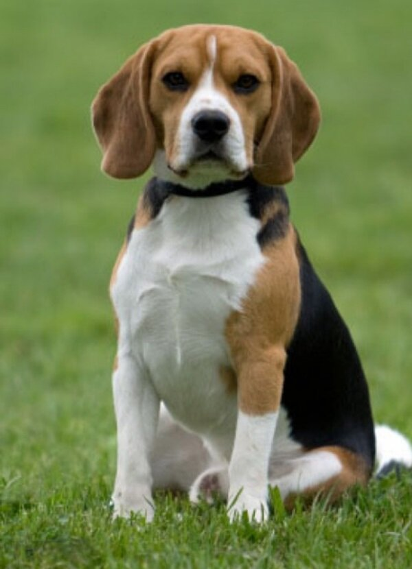

Домашние животные

Собака
Соба́ка (лат. Canis lupus familiaris) — домашнее животное, одно из наиболее популярных (наряду с кошкой) животных-компаньонов. Первоначально домашняя собака была выделена в отдельный биологический вид (лат. Canis familiaris) Линнеем в 1758 году, в 1993 году реклассифицирована Смитсоновским институтом и Американской ассоциацией териологов в подвид волка (Canis lupus)[2]. В русскоязычных письменных источниках слово «собака» в значении соответствующего животного встречается по крайней мере с 1475 года (начиная с грамоты князя Андрея Васильевича Меньшого Кириллову монастырю)[3][4]. С зоологической точки зрения, собака — плацентарное млекопитающее отряда хищных семейства псовых. Собаки известны своими способностями к обучению, любовью к игре, социальным поведением. Выведены специальные породы собак, предназначенные для различных целей: охоты, охраны, тяги гужевого транспорта и другого, а также декоративные породы (например, болонка, пудель). При необходимости разграничения по полу употребляются термины «кобе́ль» (самец) и «су́ка» (самка). Детёныши собаки называются щенками.
Кошка
Ко́шка, или дома́шняя ко́шка (лат. Félis silvéstris cátus), — домашнее животное, одно из наиболее популярных[1] (наряду с собакой) «животных-компаньонов»[2][3][4]. С точки зрения научной систематики, домашняя кошка — млекопитающее семейства кошачьих отряда хищных. Ранее домашнюю кошку нередко рассматривали как отдельный биологический вид. С точки зрения современной биологической систематики домашняя кошка (Felis silvestris catus) является подвидом лесной кошки (Felis silvestris)[5]. Являясь одиночным охотником на грызунов и других мелких животных, кошка — социальное животное[6], использующее для общения широкий диапазон звуковых сигналов, а также феромоны и движения тела[7]. В настоящее время, в мире насчитывается около 600 млн домашних кошек[8], выведено около 200 пород, от длинношёрстных (персидская кошка) до лишённых шерсти (сфинксы), признанных и зарегистрированных различными фелинологическими организациями. На протяжении 10 000 лет кошки ценятся человеком, в том числе за способность охотиться на грызунов и других домашних вредителей.